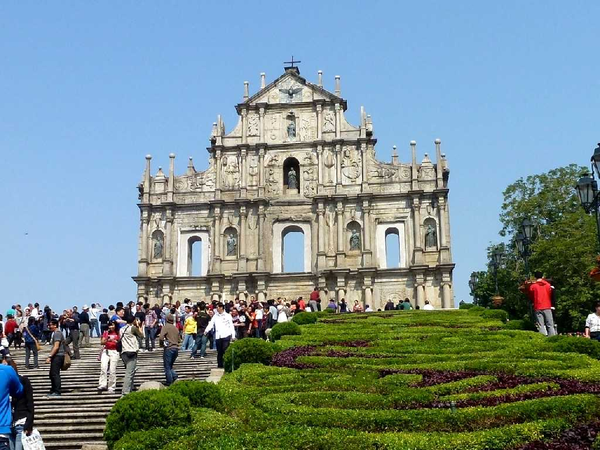
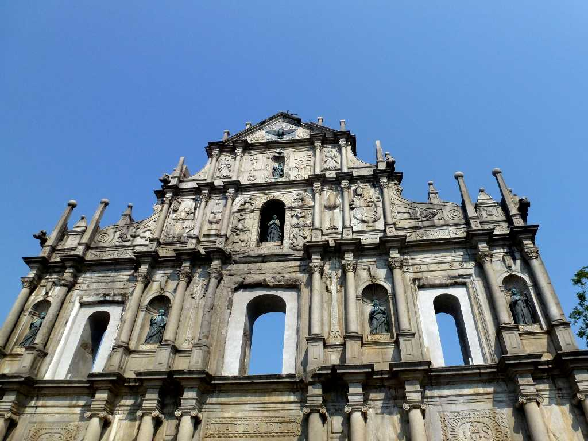
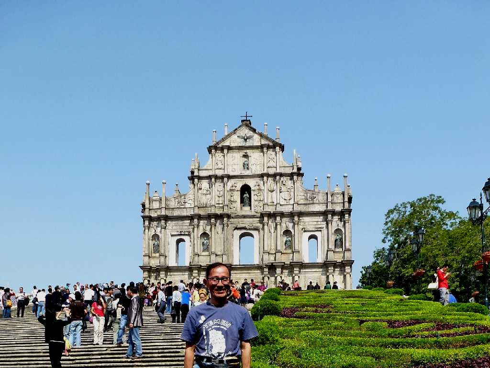

Ruínas da Antiga Catedral de São Paulo Macau 澳門
中国澳門のランドマーク聖ポール天主堂跡 １６０２年にポルトガル人のイエズス会士により創られたアジア最大のカトリック教会であったが１８３５年の台風時の火災により南の石造りを残し木造部分が焼失した

Ruínas da Antiga Catedral de São Paulo
珠江デルタの漁業の町であったが東南アジアの通商が始まると貿易の街として栄え１５１３年海洋王国ポルトガルが明王朝との交易開始後は繁栄を極めた １８４２年アヘン戦争後イギリスが香港を獲得するとポルトガルも１８４５年マカオ自由港を宣言し後に統治権を獲得した

November 6 2012 Macau
香港と同じ中国内でも特別行政区のためマカオの出入りに入出国カードが必要でした